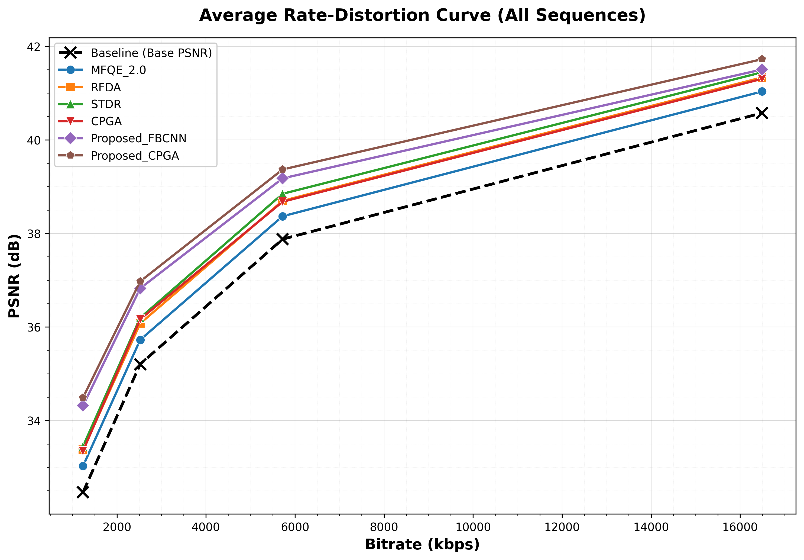

This paper reformulates H.265/HEVC video enhancement as a signal recovery task from incomplete transform-domain measurements and integrates a modified ISTA framework into the decoding process. By replacing matrix operations with codec-aware encoding/decoding operators and a neural thresholding stage, the method achieves up to 1 dB PSNR gain over state-of-the-art enhancement techniques.
| Sequence | MFQE_2.0 | RFDA | STDR | CPGA | Proposed_FBCNN | Proposed_CPGA |
|---|---|---|---|---|---|---|
| BQMall (832x480) | -12.28 | -19.83 | -22.43 | -20.36 | -32.16 | -35.09 |
| BQSquare (416x240) | -12.04 | -20.78 | -23.81 | -21.19 | -33.23 | -36.24 |
| BQTerrace (1920x1080) | -25.71 | -39.54 | -44.26 | -40.26 | -60.59 | -65.20 |
| BasketballDrill (832x480) | -11.48 | -18.27 | -20.78 | -18.80 | -30.07 | -32.99 |
| BasketballDrive (1920x1080) | -19.76 | -31.24 | -34.91 | -31.88 | -49.80 | -53.91 |
| BasketballPass (416x240) | -9.77 | -15.59 | -17.76 | -15.24 | -25.11 | -27.58 |
| BlowingBubbles (416x240) | -10.99 | -17.42 | -19.78 | -18.17 | -28.48 | -31.30 |
| Cactus (1920x1080) | -21.11 | -32.62 | -36.11 | -33.00 | -51.53 | -55.43 |
| FourPeople (1280x720) | -15.74 | -24.68 | -27.35 | -25.99 | -38.59 | -41.81 |
| Johnny (1280x720) | -21.73 | -33.15 | -36.46 | -34.14 | -50.79 | -54.64 |
| Kimono (1920x1080) | -16.12 | -25.84 | -28.69 | -25.96 | -42.09 | -45.71 |
| KristenAndSara (1280x720) | -18.61 | -29.13 | -32.17 | -29.64 | -44.33 | -48.14 |
| ParkScene (1920x1080) | -14.68 | -22.86 | -25.79 | -23.66 | -37.93 | -41.41 |
| PartyScene (832x480) | -10.15 | -16.55 | -18.97 | -17.04 | -28.01 | -30.74 |
| PeopleOnStreet (2560x1600) | -11.47 | -18.27 | -20.65 | -18.79 | -29.21 | -32.13 |
| RaceHorses (416x240) | -9.78 | -15.50 | -17.65 | -15.74 | -25.79 | -28.28 |
| RaceHorses (832x480) | -10.98 | -17.17 | -19.56 | -18.25 | -30.16 | -33.04 |
| Traffic (2560x1600) | -15.72 | -24.39 | -27.41 | -24.96 | -40.18 | -44.08 |
| Average | -14.90 | -23.49 | -26.36 | -24.06 | -37.67 | -40.98 |

Rate-Distortion curve average results